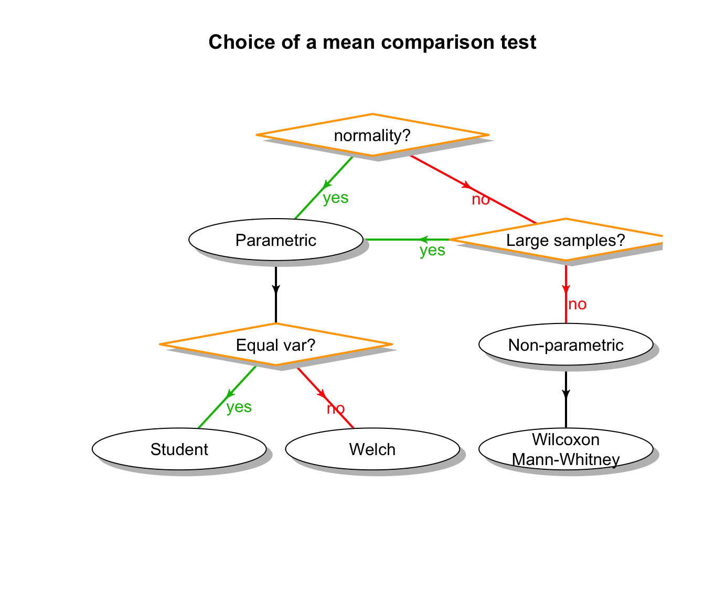

Student distribution

Student density (left) and CDF (right) on linear (top) or logarithmic (bottom) scale. The log scale highlights the rather low convergence in the tails.
Jacques van Helden
2019-10-10
We present here one of the most popular applications of statistics: the mean comparison test.
This test is used in a wide variety of contexts, and we will apply it here to two data types:
Artificial data generated by drawing samples in two populations following normal distributions, and whose means will be either identical or different, depending on the case. The goal will be to understand how to run the test and how to unterpret the results, in conditions where we control all the parameters (we know whether or not we created populations with equal or different means).
Transcriptome data obtained with microarrays. We will test whether a give gene is expressed differentially between two groups of biological samples (e.g. patients suffering from two different types of cancers).
Note: the microarray technology has been replaced by NGS, and RNA-seq has now been widely adopted for transcriptome studies. However, differential analysis with RNA-seq data relies on more advanced concepts, which will be introduvced in other courses.
General principle:
In the two-tailed test, we are a priori interested by a difference in either direction (\(\mu_1 > \mu_2\) or \(\mu_2 > \mu_2\)).
\[H_0: \mu_1 = \mu_2 \\ H_1: \mu_1 \neq \mu_2\]
In the one–tailed test, we are specifically interested by detecting differences with a given sign. The null hypothesis thus covers both the equality and the differences with the opposite sign.
Positive difference (right-tailed test):
\[H_0: \mu_1 \le \mu_2 \\ H_1: \mu_1 > \mu_2\]
Negative difference (left-tailed test):
\[H_0: \mu_1 \ge \mu_2 \\ H_1: \mu_1 < \mu_2\]
There are several possible methods to test the mean equality.
The choice of a method depends on the nature of the data.
Before running the test, it is crucial to answer some questions in order to choose the appropriate method.
This amounts to check the assumptions, i.e. a series of conditions of applicability for the selected method.
Do the two populations to be compared follow normal distributions?
Else, we must use non-parametric tests.
Why? Because the tables used to evaluate the probability of risk are derived from on mathematical models relying on a normality assumption.
In case of non-normality, do we dispose of large-sized samples? If so, we can use parametric tests despite the non-normality.
Why? Because, by virtue of the Central Limit Theorem, the sample means tend towards a normal distribution even though the original populations are not normal.
For parametric tests, the second question is: do the two population have the same variance?
No \(\rightarrow\) we must use Welch test
Why? Student probability distribution was computed based on a homoscedasticity hypothesis. Welch test is a variation on Student test, which corrects the probabilities in case of heteroscedasticity (unequal variances) by modifying the number of degrees of freedom as a function of the difference between variances.

Assumptions: normalité (or large samples), homoscedasticity.
Student’s statistics:
\[t_{S} = \frac{\hat{\delta}}{\hat{\sigma}_\delta} = \frac{\bar{x}_{2} - \bar{x}_{1}}{\sqrt{\frac{n_1 s_{1}^2 + n_2 s_{2}^2}{n_1+n_2-2} \left(\frac{1}{n_1}+ \frac{1}{n_2}\right)}}\]
This statistics can be used to compute an P-value (\(P\)), which measures the probability to obtain, under the null hypothesis, a \(t_S\) statistics at least as extreme as the one observed. Extreme refers here to the tail(s) of the distribution depending on the orientation of the test.
In the case of hypothesis testing, the P-value can be interpreted as an evaluation of the risk of first kind error, which corresponds to the risk of rejecting the null hypothesis whereas it is true. ## Degrees of freedom for Student tst
The shape of the Student distribution depends on a parameter named degrees of freedom (\(\nu\)), which represents the number of independent variables used in the equation.
In a two-sample t-test (as in our case), the degrees of freedom are computed as the total number of elements in the respective samples (\(n_1\), \(n_2\)) minus the number of means estimated from these elements (we estimated the means of group 1 and group 2, respectively). Thus:
\[\nu_S = n_1 + n_2 - 2\]
In classical texbooks of statistics, the p-value can be found in Student’s \(t\) table.
With R, the p-value of a \(t\) statistics can be computed wiht the function \(pt()\).
Student density (left) and CDF (right) on linear (top) or logarithmic (bottom) scale. The log scale highlights the rather low convergence in the tails.
| Orientation of the test | Decision criterion |
|---|---|
| Right-tailed | \(RH_0 \quad \text{if} \quad t_S > t_{1-\alpha}^{n_1 + n_2 -2}\) |
| Left-tailed | \(RH_0 \quad \text{if} \quad t_S < t_{alpha}^{n_1 + n_2 -2} = - t_{1-\alpha}^{n_1 + n_2 -2}\) |
| Two-tailed | \(RH_0 \quad \text{if} \quad \lvert t_S \rvert > t_{1-\frac{\alpha}{2}}^{n_1 + n_2 -2}\) |
The two-tailed test splits the risk symmetrically on the left and right tails ($ on each side).
Welch’s t-test defines the \(t\) statistic by the following formula.
\[t_{W}=\frac{\bar{x}_{2} - \bar{x}_{1}}{\sqrt{\frac {s^2_{1}}{n_1} + \frac{s^2_{2}}{n_2}}}\]
Where:
A researcher analysed the level of expression of a gene of intrerest in 50 patients (\(n_p = 50\))
Un chercheur a analysé, à l’aide de biopuces, le niveau d’expression de l’ensemble des gènes à partir d’échantillons sanguins prélevés chez 50 patients (\(n_p=50\)) et chez 50 sujets sains (“contrôles”, \(n_c=50\)). He obtains the following results.
In order to test whether the observed difference between the means is significant, the researcher decides to run a Student test.
Is the choice of this test appropriate ? Justify. Which alternatives would have been conceivable?
Since we have no prior idea about the sense of a potential effect of the disease on this gene, would you recommend a two-tailed or single-tailed test?
Formulate the null hypothesis and explain it in one sentence.
Compute (manually) the \(t\) statistics.
Based on the Student’s \(t\) table, evaluate the p-value of the test.
Interpret this p-value, and help the researcher to draw a conclusion from the study.
A research team detected an association between bilharziose and a high concentration of IgE in the blood.? Another team attempted to replicate this result in an independent population exposed to bilharziose, and obtained the following results.
Which method would you recommend to test mean equality? Justify.
Which are the assumptions of this test?
Assuming that these conditions are fulfilled, formulate the null hypothesis and compute the \(t\) statistics.
Evaluate the corresponding P-value basd on the Student’s \(t\) table.
Based on these results, which decision would you take? Justify your answer